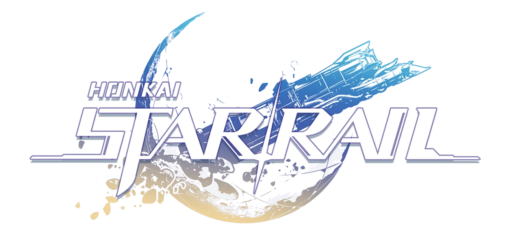

Keir Orebia
Vash Macaraig
Lovely Fabella
Rhian Dave
10-STE
Honkai: Star Rail (HSR)[a] is a free-to-play role-playing gacha video game developed and published
by miHoYo with publishing outside mainland China under Cognosphere, It is the fourth installment
in the Honkai series, utilizing some gameplay elements from Genshin Impact.
"When there is the chance to make a choice, make one that you know you won't regret..."
The Trailblazer is the playable main protagonist of Honkai: Star Rail.
Awakened during the opening events of the game by Kafka and Silver Wolf,
they are found by March 7th and Dan Heng on Herta Space Station during the Antimatter Legion's
invasion. The player gets to choose either Stelle (female) or Caelus (male) with their own Codename.